Tatlı Patates & Keçi Peynirli Tavuk Bowl
Fırınlanmış tatlı patates ve ızgara tavuğun; ıspanak, haşlanmış nohut ve keçi peyniriyle birleşip pancar turşusu ve balsamik sosla tamamlandığı doyurucu bir lezzet.

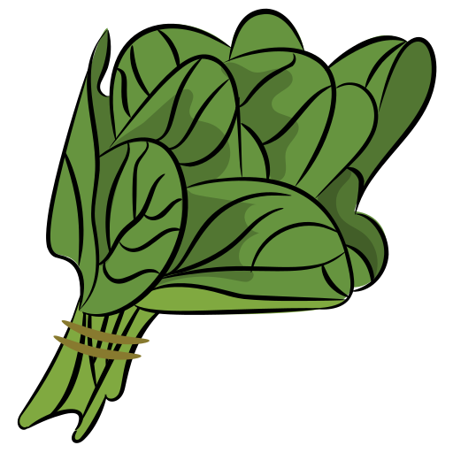
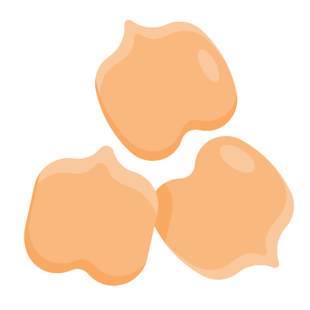

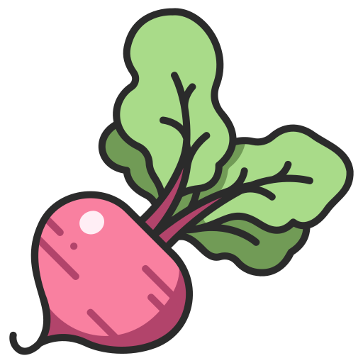
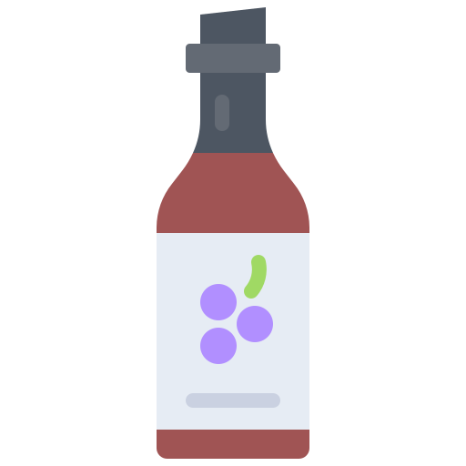

Kısır Bowl
Adana usulü kısır ve çıtır marul; rende havuç, karalahana turşusu, nar ekşisi ve zeytinyağının o geleneksel lezzeti.
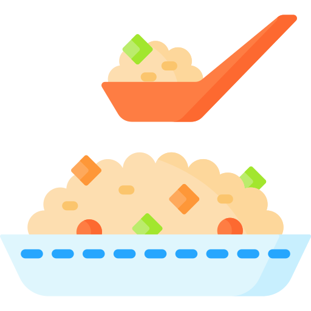


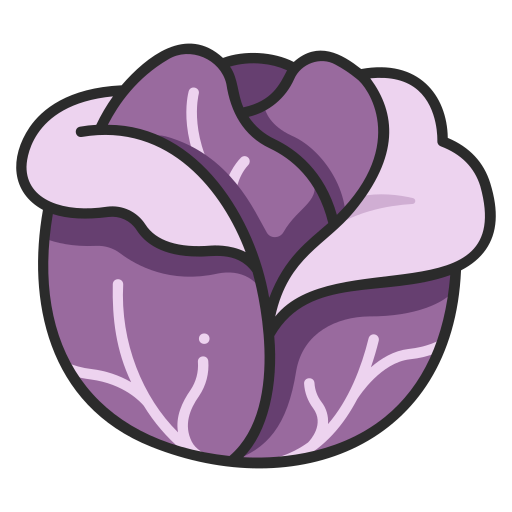
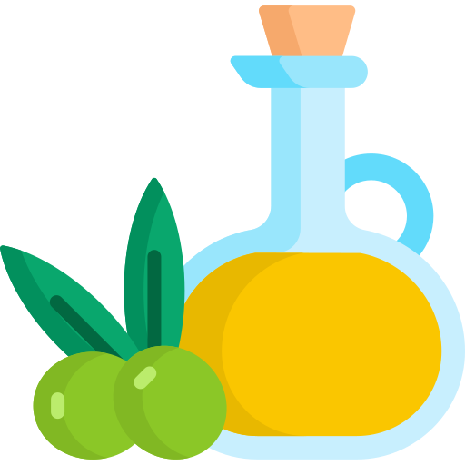

Tavuk Sezar Bowl
Izgara tavuk ve basmati pirincin, çıtır marul ve sezar sosla birleşen doyurucu lezzeti.

Ton Balıklı Bowl
Ton balığı ve basmati pirincin, marul, rende havuç ve kara lahana turşusuyla ranch sos eşliğinde buluşması.


Vegan Köfte Bowl
Vegan köfte ve karabuğdayın, marul, mısır ve mor lahana turşusuyla zeytinyağı ve nar ekşisi eşliğinde oluşturduğu lezzet patlaması.
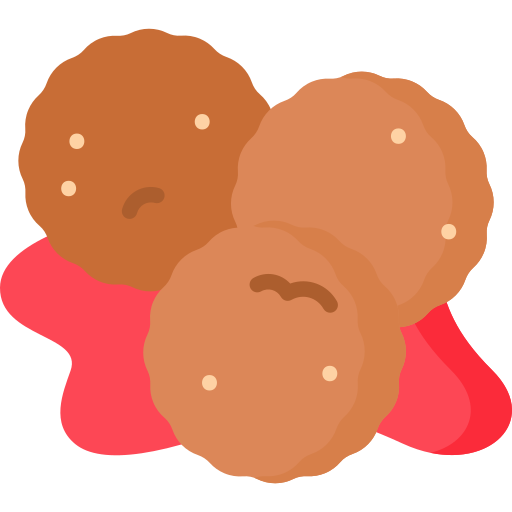
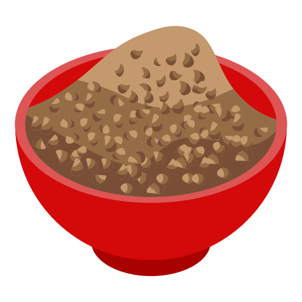
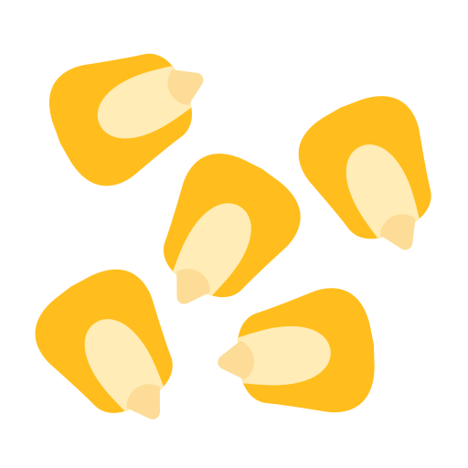

Vegan Power Bowl
Fırınlanmış tatlı patates ve karabuğday ile taze roka, nohut ve zerdeçallı tahin sosun bir araya geldiği renkli bir tabak.

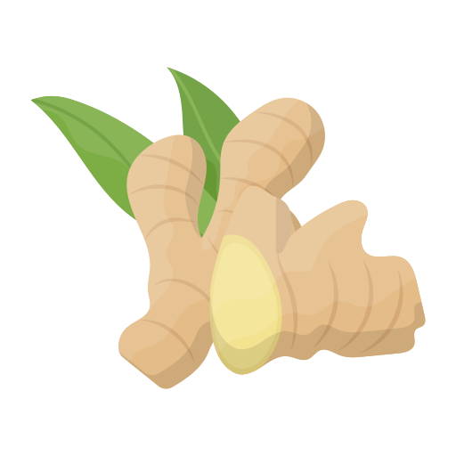